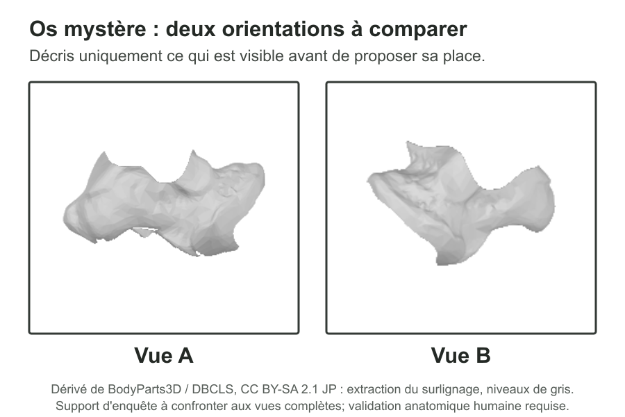

Question directrice
Où pourrait se placer cet os dans le pied, et quels indices permettent de vérifier cette proposition ?
Activité 1 · Enquête anatomique
Observer un os sans le nommer, proposer sa place dans le pied, justifier avec deux indices, puis vérifier et corriger son hypothèse.
La source française a été consolidée pour une validation scientifique ciblée et un test avec une personne enseignante ou médiatrice. La validation anatomique humaine reste obligatoire avant un test avec des élèves.
Comprendre l'activité
Où pourrait se placer cet os dans le pied, et quels indices permettent de vérifier cette proposition ?
Ils séparent observation et hypothèse, localisent une zone, justifient leur choix, découvrent le schéma légendé puis révisent leur réponse.
Le talus, aussi appelé astragale dans le projet, est un os du tarse. Le calcanéum est un autre os; le talon désigne une région du corps.
L'activité introduit une méthode d'observation. Elle ne forme pas à l'identification anatomique ou archéozoologique experte.
Déroulement principal
Présenter l'os mystère sans donner son nom ni sa place.
Relever trois détails visibles, sans interpréter.
Entourer un os ou une petite zone sur le schéma neutre du pied.
Donner deux indices différents qui soutiennent la proposition.
Comparer avec le schéma légendé et les deux orientations anatomiques.
Retrouver l'os sur une seconde orientation humaine, puis écrire ce qui reste à vérifier. La comparaison animale est un prolongement facultatif.
Variantes : 27 minutes pour l'enquête humaine et une conclusion orale; 45 minutes avec transfert sur une seconde orientation; 70 minutes avec comparaison animale écrite et discussion des limites. Les marges de transition sont incluses dans le guide.
Variante institutionnelle
La même enquête peut être conduite devant un squelette, une vitrine, une photographie, une réplique ou un modèle validé par l'institution et une personne compétente, à adapter au lieu. La médiation fonctionne même si l'objet précis n'existe pas dans la collection.
PDF A4 et Word éditable
Les PDF sont conçus pour l'impression papier; les fichiers Word constituent l'alternative éditable pour une réponse numérique. Les anciennes pages imprimables et les PDF WIP sont conservés dans le dépôt pour mémoire, mais ne constituent plus la source éditoriale ni le parcours recommandé.
Révélation progressive
Présenter d'abord les deux supports neutres. Les trois montages annotés dérivent des vues BodyParts3D déjà utilisées par le projet : la géométrie osseuse est conservée, tandis que le surlignage et les légendes sont adaptés à l'enquête. Une validation anatomique humaine reste requise.

1. Décrire l'os mystère sans le nommer.
Dérivé BodyParts3D / DBCLS, CC BY-SA 2.1 JP; extraction et niveaux de gris.

2. Proposer une localisation sans voir la réponse.
Dérivé BodyParts3D / DBCLS, CC BY-SA 2.1 JP; neutralisation et annotations.

3. Vérifier et distinguer talus, calcanéum et talon.
Dérivé annoté BodyParts3D / DBCLS, CC BY-SA 2.1 JP.

4. Contrôler la position sur une vue anatomique latérale.
BodyParts3D / DBCLS, CC BY-SA 2.1 JP; image redimensionnée.

5. Retrouver l'os malgré un changement d'orientation.
BodyParts3D / DBCLS, CC BY-SA 2.1 JP; image redimensionnée.

6. Prolongement : repérer une région comparable, sans identifier un os précis.
Museum of Veterinary Anatomy FMVZ USP / Wagner Souza e Silva; édition antérieure Rodrigo Tetsuo Argenton; CC BY-SA 4.0; fichier redimensionné.
Correspondance curriculaire provisoire
L'activité contribue à certains éléments de MSN 27 au cycle 2 par un travail local de représentation et de localisation. Elle ne travaille ni le fonctionnement locomoteur ni les conséquences pour la santé, et ne valide à elle seule aucune attente fondamentale de MSN 27. Le noyau humain peut s'intégrer dans une séquence de 5e-6e; la comparaison régionale avec le mouton peut s'intégrer comme prolongement exploratoire en 7e-8e, à vérifier et adapter. Aucun alignement autonome n'est retenu ici pour MSN 26, SHS 22, L1 25 ou Arts visuels.
Traçabilité et limites
Le pied de mouton Dundee, l'ancienne jambe de vache, la planche LeConte 1922 et les modèles 3D privés sont exclus de ce kit test tant que leur chaîne de droits ou leur validation n'est pas résolue. Les sources scientifiques ne valident pas automatiquement les droits de leurs images.
Niveau 3 renforcé : source, fiche, guide, supports et corrigé sont préparés pour une revue scientifique ciblée et un test adulte. Le passage au test élève dépend encore d'une validation anatomique des schémas et formulations, d'une relecture enseignante, d'une validation comparative et d'un contrôle d'impression physique.
{kind=link}
{kind=link}
{kind=link}